CODING AGENTS AS PIXEL WORLD MODELS
traex/DeepSeek-V4.1-Flash · 0057
点击播放 · 原生 RGB 像素
逐轮保存的候选
回放视频、检查图与代码变化。
每份候选均可单独播放。实际图片检查记录在下方工具轨迹中。
候选 01播放与检查图
点击播放 · 原生 RGB 像素

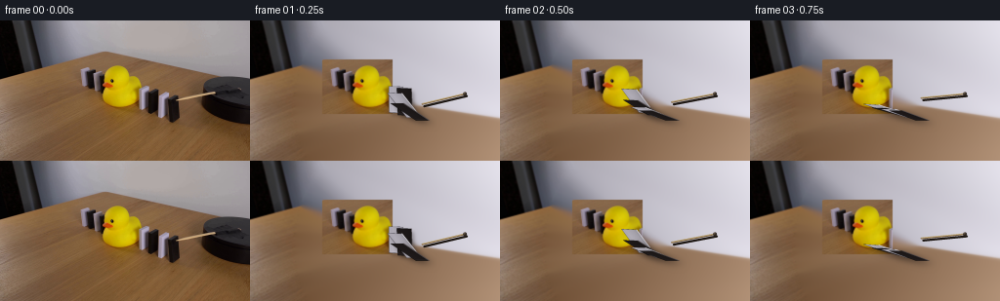
展开代码变化
--- 上一保存版本
+++ 本次保存版本
@@ -0,0 +1,293 @@
+from pathlib import Path
+
+import cv2
+import numpy as np
+from PIL import Image
+
+import artifact_io
+
+
+ROOT = Path(__file__).resolve().parent
+N_FRAMES = 20
+FPS = 4
+WIDTH, HEIGHT = 256, 144
+SS = 4
+
+
+def smoothstep(x):
+ x = np.clip(x, 0.0, 1.0)
+ return x * x * (3.0 - 2.0 * x)
+
+
+def ease_out(x):
+ x = np.clip(x, 0.0, 1.0)
+ return 1.0 - (1.0 - x) ** 3
+
+
+def build_clean_plate(source):
+ """Remove the right-hand dominoes and the rod from the opening plate."""
+ mask = np.zeros((HEIGHT, WIDTH), np.uint8)
+
+ # Tight silhouettes around the four right-hand tiles.
+ polygons = [
+ [(168, 73), (183, 75), (184, 103), (169, 103)],
+ [(159, 70), (176, 73), (175, 101), (160, 100)],
+ [(150, 68), (167, 71), (166, 99), (151, 97)],
+ [(141, 65), (159, 68), (158, 96), (142, 94)],
+ ]
+ for poly in polygons:
+ cv2.fillPoly(mask, [np.asarray(poly, np.int32)], 255)
+
+ # The rod crosses both the table and the platform.
+ cv2.line(mask, (174, 87), (223, 75), 5, 255, cv2.LINE_AA)
+
+ big = cv2.resize(source, None, fx=SS, fy=SS, interpolation=cv2.INTER_CUBIC)
+ big_mask = cv2.resize(mask, None, fx=SS, fy=SS, interpolation=cv2.INTER_NEAREST)
+ big_mask = cv2.dilate(big_mask, np.ones((3, 3), np.uint8), iterations=1)
+ clean = cv2.inpaint(big, big_mask, 8, cv2.INPAINT_TELEA)
+ clean = cv2.resize(clean, (WIDTH, HEIGHT), interpolation=cv2.INTER_AREA)
+
+ # The duck and the left-hand row never move; restore them exactly.
+ clean[40:96, 74:146] = source[40:96, 74:146]
+ return clean
+
+
+def make_face_texture(color, seed):
+ """A small high-resolution domino face with bevels and subtle grain."""
+ rng = np.random.default_rng(seed)
+ tw, th = 96, 288
+ yy, xx = np.mgrid[0:th, 0:tw].astype(np.float32)
+ nx = xx / (tw - 1.0)
+ ny = yy / (th - 1.0)
+
+ if color == "white":
+ base = np.array([181.0, 177.0, 187.0])
+ edge = np.array([104.0, 98.0, 111.0])
+ highlight = np.array([224.0, 222.0, 231.0])
+ else:
+ base = np.array([31.0, 26.0, 26.0])
+ edge = np.array([8.0, 7.0, 8.0])
+ highlight = np.array([70.0, 64.0, 65.0])
+
+ # Soft directional shading across the face.
+ shade = 0.88 + 0.20 * (1.0 - nx) * (1.0 - 0.45 * ny)
+ tex = base[None, None, :] * shade[:, :, None]
+
+ border = np.minimum(np.minimum(nx, 1.0 - nx) * tw,
+ np.minimum(ny, 1.0 - ny) * th)
+ bevel = np.clip(border / 5.0, 0.0, 1.0)[:, :, None]
+ tex = edge[None, None, :] * (1.0 - bevel) + tex * bevel
+
+ # A narrow top/left highlight makes the tiny tiles read as molded pieces.
+ left_line = np.exp(-((nx - 0.075) / 0.018) ** 2) * (ny > 0.05) * (ny < 0.95)
+ top_line = np.exp(-((ny - 0.055) / 0.014) ** 2) * (nx > 0.07) * (nx < 0.93)
+ rim = np.clip(left_line + 0.75 * top_line, 0.0, 1.0)[:, :, None]
+ tex = tex * (1.0 - 0.38 * rim) + highlight[None, None, :] * (0.38 * rim)
+
+ # Fine grain is deliberately low amplitude at 256x144.
+ grain = rng.normal(0.0, 1.25, (th, tw, 1))
+ tex = tex + grain
+
+ vignette = np.clip((0.5 - np.abs(nx - 0.52)) * 4.0, 0.0, 1.0)
+ tex *= (0.92 + 0.08 * vignette)[:, :, None]
+ return np.clip(tex, 0, 255).astype(np.uint8)
+
+
+WHITE_TEX = make_face_texture("white", 7)
+BLACK_TEX = make_face_texture("black", 19)
+
+
+def warped_face(texture, quad, dst_size):
+ """Warp a texture to an antialiased quad on the supersampled canvas."""
+ tw, th = texture.shape[1], texture.shape[0]
+ src = np.float32([[0, 0], [tw - 1, 0], [tw - 1, th - 1], [0, th - 1]])
+ dst = np.float32(quad) * SS
+ matrix = cv2.getPerspectiveTransform(src, dst)
+ return cv2.warpPerspective(
+ texture,
+ matrix,
+ dst_size,
+ flags=cv2.INTER_CUBIC,
+ borderMode=cv2.BORDER_CONSTANT,
+ borderValue=(0, 0, 0),
+ )
+
+
+def add_shadow(canvas, quad, opacity=0.30, blur=9, offset=(3.0, 3.0)):
+ """Soft table shadow cast by a standing or falling domino."""
+ mask = np.zeros(canvas.shape[:2], np.uint8)
+ pts = np.asarray(quad, np.float32)
+ pts[:, 0] += offset[0]
+ pts[:, 1] += offset[1]
+ cv2.fillPoly(mask, [np.rint(pts * SS).astype(np.int32)], 255)
+ mask = cv2.GaussianBlur(mask, (0, 0), blur)
+ alpha = (mask.astype(np.float32) / 255.0 * opacity)[:, :, None]
+ shadow_color = np.array([25.0, 18.0, 15.0], np.float32)
+ canvas[:] = canvas * (1.0 - alpha) + shadow_color * alpha
+
+
+def domino_quad(base_a, base_b, up, fall, theta, height):
+ """Project a domino hinged on its base as it tips toward `fall`."""
+ theta = float(np.clip(theta, 0.0, np.pi * 0.5))
+ base_a = np.asarray(base_a, np.float32)
+ base_b = np.asarray(base_b, np.float32)
+ up = np.asarray(up, np.float32)
+ fall = np.asarray(fall, np.float32)
+
+ top_offset = height * (np.cos(theta) * up + np.sin(theta) * fall)
+ return np.vstack([base_a, base_b, base_b + top_offset, base_a + top_offset])
+
+
+def domino_motion(frame_index):
+ """Staggered impact times and a quick, damped fall for four tiles."""
+ t = frame_index / FPS
+ # Rightmost first. The slight negative threshold keeps contact at the start.
+ starts = [-0.035, 0.105, 0.245, 0.385]
+ periods = [0.56, 0.54, 0.52, 0.50]
+ angles = []
+ for start, period in zip(starts, periods):
+ u = (t - start) / period
+ if u <= 0:
+ angles.append(0.0)
+ continue
+ if u >= 1:
+ angles.append(np.pi * 0.5)
+ continue
+ # Fast initial torque, then a brief over-rotation and settle.
+ p = 0.84 * ease_out(u) + 0.16 * smoothstep(u)
+ if u > 0.80:
+ p += 0.055 * np.sin((u - 0.80) / 0.20 * np.pi) * (1.0 - u) * 4.0
+ angles.append(np.pi * 0.5 * p)
+ return angles
+
+
+def render_frame(clean_plate, source, frame_index):
+ if frame_index == 0:
+ return source.copy()
+
+ canvas = cv2.resize(
+ clean_plate, (WIDTH * SS, HEIGHT * SS), interpolation=cv2.INTER_CUBIC
+ ).astype(np.float32)
+
+ # Four dominoes recede from the platform toward the duck.
+ # base_a/base_b are the two ends of the hinged bottom edge.
+ specs = [
+ dict(base_a=(169.7, 102.4), base_b=(183.2, 102.4),
+ up=(0.02, -1.0), fall=(-0.94, -0.34),
+ height=29.0, color="black"),
+ dict(base_a=(160.3, 99.5), base_b=(175.2, 99.8),
+ up=(0.01, -1.0), fall=(-0.95, -0.31),
+ height=28.0, color="white"),
+ dict(base_a=(151.2, 97.1), base_b=(166.2, 97.6),
+ up=(0.0, -1.0), fall=(-0.96, -0.28),
+ height=27.5, color="black"),
+ dict(base_a=(142.2, 94.4), base_b=(157.8, 95.1),
+ up=(-0.01, -1.0), fall=(-0.97, -0.25),
+ height=27.0, color="white"),
+ ]
+ angles = domino_motion(frame_index)
+
+ # Back-to-front order: the farther/left tile is painted first.
+ order = [3, 2, 1, 0]
+ for i in order:
+ spec = specs[i]
+ quad = domino_quad(
+ spec["base_a"], spec["base_b"], spec["up"], spec["fall"],
+ angles[i], spec["height"],
+ )
+ # Shadow gets longer and softer as the tile lies down.
+ lie = np.sin(angles[i])
+ add_shadow(canvas, quad, opacity=0.27 + 0.10 * lie,
+ blur=7.0 + 7.0 * lie, offset=(2.5 + 3.0 * lie, 3.2))
+ texture = BLACK_TEX if spec["color"] == "black" else WHITE_TEX
+ layer = warped_face(texture, quad, (WIDTH * SS, HEIGHT * SS))
+
+ # Antialiased quad mask.
+ qmask = np.zeros((HEIGHT * SS, WIDTH * SS), np.uint8)
+ cv2.fillPoly(qmask, [np.rint(quad * SS).astype(np.int32)], 255)
+ qmask = cv2.GaussianBlur(qmask, (0, 0), 0.55)
+ alpha = qmask.astype(np.float32)[:, :, None] / 255.0
+ canvas = canvas * (1.0 - alpha) + layer.astype(np.float32) * alpha
+
+ # A thin edge catches light and separates adjacent dominoes.
+ edge_quad = np.asarray(quad, np.float32)
+ cv2.line(
+ canvas,
+ tuple(np.rint(edge_quad[1] * SS).astype(int)),
+ tuple(np.rint(edge_quad[2] * SS).astype(int)),
+ (78, 71, 72) if spec["color"] == "black" else (216, 213, 219),
+ max(1, SS // 2),
+ cv2.LINE_AA,
+ )
+
+ # Animated wooden rod, rotating clockwise about the platform attachment.
+ pivot = np.array([220.0, 75.2], np.float32)
+ start_angle = np.deg2rad(166.5)
+ rod_angle = start_angle + np.deg2rad(16.0) * smoothstep((frame_index - 1) / 4.0)
+ length = 45.0
+ tip = pivot + length * np.array([np.cos(rod_angle), np.sin(rod_angle)], np.float32)
+
+ # Rod shadow on table/platform.
+ shadow_shift = np.array([2.0, 2.2], np.float32)
+ cv2.line(
+ canvas,
+ tuple(np.rint((pivot + shadow_shift) * SS).astype(int)),
+ tuple(np.rint((tip + shadow_shift) * SS).astype(int)),
+ (30, 24, 20),
+ max(2, int(2.1 * SS)),
+ cv2.LINE_AA,
+ )
+ cv2.line(
+ canvas,
+ tuple(np.rint(pivot * SS).astype(int)),
+ tuple(np.rint(tip * SS).astype(int)),
+ (126, 101, 69),
+ max(2, int(1.45 * SS)),
+ cv2.LINE_AA,
+ )
+ cv2.line(
+ canvas,
+ tuple(np.rint((pivot + np.array([0.0, -0.5])) * SS).astype(int)),
+ tuple(np.rint((tip + np.array([0.0, -0.5])) * SS).astype(int)),
+ (196, 172, 119),
+ max(1, int(0.55 * SS)),
+ cv2.LINE_AA,
+ )
+ cv2.circle(
+ canvas,
+ tuple(np.rint(pivot * SS).astype(int)),
+ int(2.1 * SS),
+ (48, 40, 34),
+ -1,
+ cv2.LINE_AA,
+ )
+ cv2.circle(
+ canvas,
+ tuple(np.rint((pivot + np.array([-0.6, -0.8])) * SS).astype(int)),
+ int(1.1 * SS),
+ (95, 80, 65),
+ -1,
+ cv2.LINE_AA,
+ )
+
+ result = cv2.resize(canvas, (WIDTH, HEIGHT), interpolation=cv2.INTER_AREA)
+ return np.clip(result, 0, 255).astype(np.uint8)
+
+
+def main():
+ source = np.asarray(Image.open(ROOT / "first_frame.png").convert("RGB"))
+ assert source.shape == (HEIGHT, WIDTH, 3)
+ clean_plate = build_clean_plate(cv2.cvtColor(source, cv2.COLOR_RGB2BGR))
+ clean_plate = cv2.cvtColor(clean_plate, cv2.COLOR_BGR2RGB)
+
+ frames = [
+ render_frame(clean_plate, source, i)
+ for i in range(N_FRAMES)
+ ]
+ frames = np.stack(frames).astype(np.uint8)
+ assert np.array_equal(frames[0], source)
+ artifact_io.save(frames, ROOT)
+
+
+if __name__ == "__main__":
+ main()
候选 02播放与检查图
点击播放 · 原生 RGB 像素
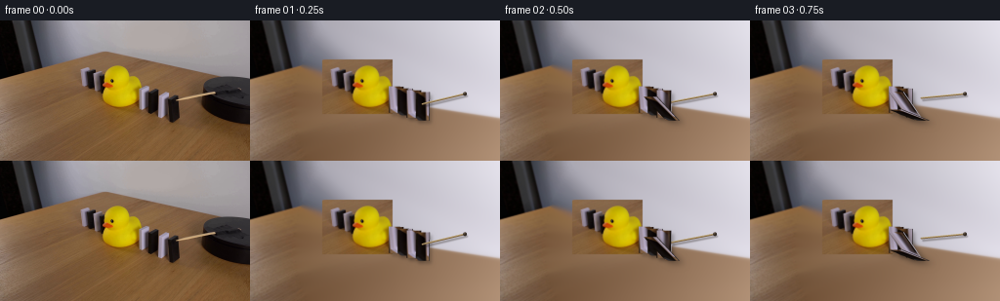
展开代码变化
--- 上一保存版本
+++ 本次保存版本
@@ -52,49 +52,20 @@
return clean
-def make_face_texture(color, seed):
- """A small high-resolution domino face with bevels and subtle grain."""
- rng = np.random.default_rng(seed)
- tw, th = 96, 288
- yy, xx = np.mgrid[0:th, 0:tw].astype(np.float32)
- nx = xx / (tw - 1.0)
- ny = yy / (th - 1.0)
-
- if color == "white":
- base = np.array([181.0, 177.0, 187.0])
- edge = np.array([104.0, 98.0, 111.0])
- highlight = np.array([224.0, 222.0, 231.0])
- else:
- base = np.array([31.0, 26.0, 26.0])
- edge = np.array([8.0, 7.0, 8.0])
- highlight = np.array([70.0, 64.0, 65.0])
-
- # Soft directional shading across the face.
- shade = 0.88 + 0.20 * (1.0 - nx) * (1.0 - 0.45 * ny)
- tex = base[None, None, :] * shade[:, :, None]
-
- border = np.minimum(np.minimum(nx, 1.0 - nx) * tw,
- np.minimum(ny, 1.0 - ny) * th)
- bevel = np.clip(border / 5.0, 0.0, 1.0)[:, :, None]
- tex = edge[None, None, :] * (1.0 - bevel) + tex * bevel
-
- # A narrow top/left highlight makes the tiny tiles read as molded pieces.
- left_line = np.exp(-((nx - 0.075) / 0.018) ** 2) * (ny > 0.05) * (ny < 0.95)
- top_line = np.exp(-((ny - 0.055) / 0.014) ** 2) * (nx > 0.07) * (nx < 0.93)
- rim = np.clip(left_line + 0.75 * top_line, 0.0, 1.0)[:, :, None]
- tex = tex * (1.0 - 0.38 * rim) + highlight[None, None, :] * (0.38 * rim)
-
- # Fine grain is deliberately low amplitude at 256x144.
- grain = rng.normal(0.0, 1.25, (th, tw, 1))
- tex = tex + grain
-
- vignette = np.clip((0.5 - np.abs(nx - 0.52)) * 4.0, 0.0, 1.0)
- tex *= (0.92 + 0.08 * vignette)[:, :, None]
- return np.clip(tex, 0, 255).astype(np.uint8)
-
-
-WHITE_TEX = make_face_texture("white", 7)
-BLACK_TEX = make_face_texture("black", 19)
+def extract_face_texture(source, quad, size=(52, 112)):
+ """Rectify a real domino face from the source frame."""
+ src = np.float32(quad)
+ dst = np.float32([
+ [0, 0], [size[0] - 1, 0],
+ [size[0] - 1, size[1] - 1], [0, size[1] - 1],
+ ])
+ matrix = cv2.getPerspectiveTransform(src, dst)
+ texture = cv2.warpPerspective(
+ source, matrix, size, flags=cv2.INTER_CUBIC,
+ borderMode=cv2.BORDER_REPLICATE,
+ )
+ texture = cv2.GaussianBlur(texture, (0, 0), 0.35)
+ return texture
def warped_face(texture, quad, dst_size):
@@ -141,9 +112,9 @@
def domino_motion(frame_index):
"""Staggered impact times and a quick, damped fall for four tiles."""
t = frame_index / FPS
- # Rightmost first. The slight negative threshold keeps contact at the start.
- starts = [-0.035, 0.105, 0.245, 0.385]
- periods = [0.56, 0.54, 0.52, 0.50]
+ # Rightmost first, with enough separation to read each contact at 4 fps.
+ starts = [0.32, 0.63, 0.94, 1.25]
+ periods = [0.54, 0.52, 0.50, 0.48]
angles = []
for start, period in zip(starts, periods):
u = (t - start) / period
@@ -161,7 +132,7 @@
return angles
-def render_frame(clean_plate, source, frame_index):
+def render_frame(clean_plate, source, frame_index, textures):
if frame_index == 0:
return source.copy()
@@ -197,25 +168,34 @@
)
# Shadow gets longer and softer as the tile lies down.
lie = np.sin(angles[i])
- add_shadow(canvas, quad, opacity=0.27 + 0.10 * lie,
- blur=7.0 + 7.0 * lie, offset=(2.5 + 3.0 * lie, 3.2))
- texture = BLACK_TEX if spec["color"] == "black" else WHITE_TEX
- layer = warped_face(texture, quad, (WIDTH * SS, HEIGHT * SS))
-
- # Antialiased quad mask.
+ smask = np.zeros((HEIGHT * SS, WIDTH * SS), np.uint8)
+ spts = np.asarray(quad, np.float32).copy()
+ spts[:, 0] += 2.5 + 3.0 * lie
+ spts[:, 1] += 3.2
+ cv2.fillPoly(smask, [np.rint(spts * SS).astype(np.int32)], 255)
+ smask = cv2.GaussianBlur(smask, (0, 0), 7.0 + 7.0 * lie)
+ shadow_alpha = (smask.astype(np.float32) / 255.0 *
+ (0.27 + 0.10 * lie))[:, :, None]
+ shadow_color = np.array([24.0, 18.0, 15.0], np.float32)
+ canvas = (canvas * (1.0 - shadow_alpha) +
+ shadow_color * shadow_alpha)
+
+ texture = textures[spec["color"]]
+ face = warped_face(texture, quad, (WIDTH * SS, HEIGHT * SS))
+
qmask = np.zeros((HEIGHT * SS, WIDTH * SS), np.uint8)
cv2.fillPoly(qmask, [np.rint(quad * SS).astype(np.int32)], 255)
qmask = cv2.GaussianBlur(qmask, (0, 0), 0.55)
alpha = qmask.astype(np.float32)[:, :, None] / 255.0
- canvas = canvas * (1.0 - alpha) + layer.astype(np.float32) * alpha
-
- # A thin edge catches light and separates adjacent dominoes.
+ canvas = canvas * (1.0 - alpha) + face.astype(np.float32) * alpha
+
+ # A restrained highlight separates adjacent faces without neon edges.
edge_quad = np.asarray(quad, np.float32)
cv2.line(
canvas,
tuple(np.rint(edge_quad[1] * SS).astype(int)),
tuple(np.rint(edge_quad[2] * SS).astype(int)),
- (78, 71, 72) if spec["color"] == "black" else (216, 213, 219),
+ (55, 49, 50) if spec["color"] == "black" else (171, 167, 178),
max(1, SS // 2),
cv2.LINE_AA,
)
@@ -229,14 +209,19 @@
# Rod shadow on table/platform.
shadow_shift = np.array([2.0, 2.2], np.float32)
+ rod_shadow = np.zeros((HEIGHT * SS, WIDTH * SS), np.uint8)
cv2.line(
- canvas,
+ rod_shadow,
tuple(np.rint((pivot + shadow_shift) * SS).astype(int)),
tuple(np.rint((tip + shadow_shift) * SS).astype(int)),
- (30, 24, 20),
+ 255,
max(2, int(2.1 * SS)),
cv2.LINE_AA,
)
+ rod_shadow = cv2.GaussianBlur(rod_shadow, (0, 0), 2.0)
+ rod_shadow_alpha = (rod_shadow.astype(np.float32) / 255.0 * 0.30)[:, :, None]
+ canvas = (canvas * (1.0 - rod_shadow_alpha) +
+ np.array([26.0, 20.0, 17.0], np.float32) * rod_shadow_alpha)
cv2.line(
canvas,
tuple(np.rint(pivot * SS).astype(int)),
@@ -279,9 +264,17 @@
assert source.shape == (HEIGHT, WIDTH, 3)
clean_plate = build_clean_plate(cv2.cvtColor(source, cv2.COLOR_RGB2BGR))
clean_plate = cv2.cvtColor(clean_plate, cv2.COLOR_BGR2RGB)
+ textures = {
+ "black": extract_face_texture(
+ source, [(153, 71), (164, 73), (165, 97), (153, 96)]
+ ),
+ "white": extract_face_texture(
+ source, [(161, 73), (173, 75), (174, 99), (162, 98)]
+ ),
+ }
frames = [
- render_frame(clean_plate, source, i)
+ render_frame(clean_plate, source, i, textures)
for i in range(N_FRAMES)
]
frames = np.stack(frames).astype(np.uint8)
候选 03播放与检查图
点击播放 · 原生 RGB 像素

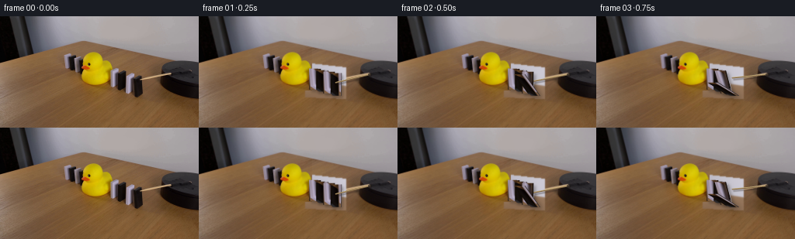
展开代码变化
--- 上一保存版本
+++ 本次保存版本
@@ -113,8 +113,8 @@
"""Staggered impact times and a quick, damped fall for four tiles."""
t = frame_index / FPS
# Rightmost first, with enough separation to read each contact at 4 fps.
- starts = [0.32, 0.63, 0.94, 1.25]
- periods = [0.54, 0.52, 0.50, 0.48]
+ starts = [0.28, 0.68, 1.08, 1.48]
+ periods = [0.88, 0.84, 0.80, 0.76]
angles = []
for start, period in zip(starts, periods):
u = (t - start) / period
@@ -139,6 +139,23 @@
canvas = cv2.resize(
clean_plate, (WIDTH * SS, HEIGHT * SS), interpolation=cv2.INTER_CUBIC
).astype(np.float32)
+ # Inpainting alters broad regions of the texture. Restore everything except
+ # the animated tile footprint and the platform/table under the moving rod.
+ moving_region = np.zeros((HEIGHT, WIDTH), np.uint8)
+ cv2.fillPoly(moving_region, [np.array([
+ (136, 60), (189, 66), (189, 106), (137, 104),
+ ], np.int32)], 255)
+ rod_region = np.zeros((HEIGHT, WIDTH), np.uint8)
+ cv2.line(rod_region, (167, 88), (224, 77), 8, 255)
+ static_region = cv2.bitwise_not(cv2.bitwise_or(moving_region, rod_region))
+ static_region = cv2.GaussianBlur(static_region, (0, 0), 0.55)
+ static_alpha = cv2.resize(
+ static_region, (WIDTH * SS, HEIGHT * SS), interpolation=cv2.INTER_LINEAR
+ ).astype(np.float32)[:, :, None] / 255.0
+ source_big = cv2.resize(
+ source, (WIDTH * SS, HEIGHT * SS), interpolation=cv2.INTER_CUBIC
+ ).astype(np.float32)
+ canvas = canvas * (1.0 - static_alpha) + source_big * static_alpha
# Four dominoes recede from the platform toward the duck.
# base_a/base_b are the two ends of the hinged bottom edge.
候选 04播放与检查图
点击播放 · 原生 RGB 像素

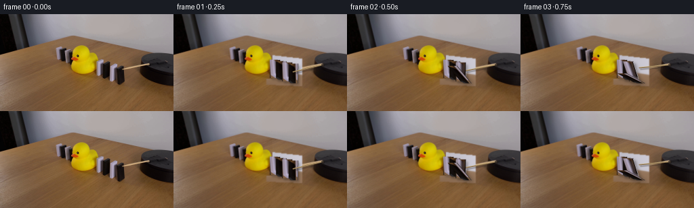
展开代码变化
--- 上一保存版本
+++ 本次保存版本
@@ -107,6 +107,18 @@
top_offset = height * (np.cos(theta) * up + np.sin(theta) * fall)
return np.vstack([base_a, base_b, base_b + top_offset, base_a + top_offset])
+
+
+def collapsed_quad(base_a, base_b, up, fall, height):
+ """Projection of a domino at rest, lying toward the duck."""
+ base_a = np.asarray(base_a, np.float32)
+ base_b = np.asarray(base_b, np.float32)
+ fall = np.asarray(fall, np.float32)
+ fall = fall / np.linalg.norm(fall)
+ # A slight vertical foreshortening gives the top face of the thin tile.
+ end = base_a + fall * height
+ end_b = base_b + fall * height
+ return np.vstack([base_a, base_b, end_b, end])
def domino_motion(frame_index):
@@ -124,10 +136,10 @@
if u >= 1:
angles.append(np.pi * 0.5)
continue
- # Fast initial torque, then a brief over-rotation and settle.
- p = 0.84 * ease_out(u) + 0.16 * smoothstep(u)
- if u > 0.80:
- p += 0.055 * np.sin((u - 0.80) / 0.20 * np.pi) * (1.0 - u) * 4.0
+ # Fast initial torque, followed by a short impact rebound.
+ p = ease_out(u)
+ if u > 0.78:
+ p += 0.045 * np.sin((u - 0.78) / 0.22 * np.pi)
angles.append(np.pi * 0.5 * p)
return angles
@@ -179,10 +191,16 @@
order = [3, 2, 1, 0]
for i in order:
spec = specs[i]
- quad = domino_quad(
- spec["base_a"], spec["base_b"], spec["up"], spec["fall"],
- angles[i], spec["height"],
- )
+ if angles[i] >= np.pi * 0.5 - 1e-6:
+ quad = collapsed_quad(
+ spec["base_a"], spec["base_b"], spec["up"], spec["fall"],
+ spec["height"],
+ )
+ else:
+ quad = domino_quad(
+ spec["base_a"], spec["base_b"], spec["up"], spec["fall"],
+ angles[i], spec["height"],
+ )
# Shadow gets longer and softer as the tile lies down.
lie = np.sin(angles[i])
smask = np.zeros((HEIGHT * SS, WIDTH * SS), np.uint8)
@@ -208,10 +226,12 @@
# A restrained highlight separates adjacent faces without neon edges.
edge_quad = np.asarray(quad, np.float32)
+ edge_pt_a = edge_quad[1] if angles[i] < np.pi * 0.5 - 1e-6 else edge_quad[2]
+ edge_pt_b = edge_quad[2] if angles[i] < np.pi * 0.5 - 1e-6 else edge_quad[3]
cv2.line(
canvas,
- tuple(np.rint(edge_quad[1] * SS).astype(int)),
- tuple(np.rint(edge_quad[2] * SS).astype(int)),
+ tuple(np.rint(edge_pt_a * SS).astype(int)),
+ tuple(np.rint(edge_pt_b * SS).astype(int)),
(55, 49, 50) if spec["color"] == "black" else (171, 167, 178),
max(1, SS // 2),
cv2.LINE_AA,
候选 05播放与检查图
点击播放 · 原生 RGB 像素
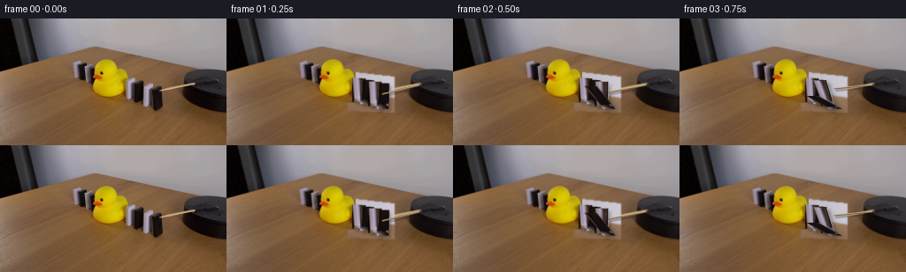
展开代码变化
--- 上一保存版本
+++ 本次保存版本
@@ -115,10 +115,12 @@
base_b = np.asarray(base_b, np.float32)
fall = np.asarray(fall, np.float32)
fall = fall / np.linalg.norm(fall)
- # A slight vertical foreshortening gives the top face of the thin tile.
end = base_a + fall * height
end_b = base_b + fall * height
- return np.vstack([base_a, base_b, end_b, end])
+ width = base_b - base_a
+ # A visible narrow top edge preserves the three-dimensional read.
+ lift = np.array([0.0, -1.7], np.float32)
+ return np.vstack([base_a, base_b, end_b + lift, end + lift])
def domino_motion(frame_index):
@@ -303,10 +305,10 @@
clean_plate = cv2.cvtColor(clean_plate, cv2.COLOR_BGR2RGB)
textures = {
"black": extract_face_texture(
- source, [(153, 71), (164, 73), (165, 97), (153, 96)]
+ source, [(170, 76), (182, 78), (183, 101), (171, 100)]
),
"white": extract_face_texture(
- source, [(161, 73), (173, 75), (174, 99), (162, 98)]
+ source, [(160, 73), (173, 75), (174, 99), (161, 98)]
),
}
可观测工具轨迹
实际执行的命令与返回图片。
命令 1exit 0
/bin/bash -c "pwd && rg --files -g '"'!*.png'"' -g '"'!*.jpg'"' -g '"'!*.jpeg'"' | sort | sed -n '1,200p'"
命令 2exit 0
/bin/bash -c "printf '%s\\n' '--- prompt.txt ---'; sed -n '1,240p' prompt.txt; printf '%s\\n' '--- GENERATION_RULES.md ---'; sed -n '1,280p' GENERATION_RULES.md"
命令 3exit 0
/bin/bash -c "ls -la; find . -maxdepth 2 -type f -printf '%p %s bytes\\n' | sort | sed -n '1,240p'"
命令 4exit 0
/bin/bash -c "command -v ffmpeg || true; command -v python3 || true; python3 - <<'PY'
mods=['PIL','numpy','cv2','torch','imageio','moviepy','matplotlib','scipy']
for m in mods:
try:
mod=__import__(m)
print(m, getattr(mod,'__version__','ok'))
except Exception as e:
print(m, 'MISSING', type(e).__name__, str(e)[:120])
PY"命令 5exit 0
/bin/bash -c "sed -n '1,280p' artifact_io.py"
命令 6exit 0
/bin/bash -c "python3 - <<'PY'
from PIL import Image
im=Image.open('first_frame.png')
print(im.mode, im.size)
im.crop((55,38,205,125)).resize((900,522)).save('.tmp/scene_crop.png')
im.crop((175,48,256,110)).resize((810,620)).save('.tmp/platform_crop.png')
PY"命令 7exit 0
/bin/bash -c "python3 - <<'PY'
from PIL import Image
import numpy as np
im=np.array(Image.open('first_frame.png'))
# print downsample labels using ANSI? simpler color clusters and bounding boxes masks
for name, cond in {
'yellow': (im[:,:,0]>170)&(im[:,:,1]>120)&(im[:,:,2]<80),
'white': (im.mean(2)>185)&(np.max(im,2)-np.min(im,2)<35),
'black': (im.mean(2)<55),
'wood': (im[:,:,0]>100)&(im[:,:,0]<220)&(im[:,:,1]>60)&(im[:,:,1]<170)&(im[:,:,2]<100),
}.items():
ys,xs=np.where(cond)
print(name, (xs.min(),ys.min(),xs.max(),ys.max()), len(xs))
# x/y bounding each domino based on white and black components not perfect
PY"命令 8exit 0
/bin/bash -c "python3 - <<'PY'
from PIL import Image, ImageDraw, ImageFont
im=Image.open('first_frame.png').resize((1024,576), Image.Resampling.NEAREST)
d=ImageDraw.Draw(im)
for x in range(0,257,10):
xx=x*4
d.line((xx,0,xx,576), fill=(255,0,255) if x%50==0 else (80,180,255), width=1)
if x%20==0: d.text((xx+2,2),str(x),fill=(255,255,255))
for y in range(0,145,10):
yy=y*4
d.line((0,yy,1024,yy), fill=(255,0,255) if y%50==0 else (80,180,255), width=1)
if y%20==0: d.text((2,yy+2),str(y),fill=(255,255,255))
im.save('.tmp/grid.png')
PY"命令 9exit 0
/bin/bash -c "python3 - <<'PY'
from PIL import Image
im=Image.open('first_frame.png')
for name,box in {
'rightchain':(132,58,192,125),
'leftchain':(74,42,122,100),
'duck':(100,42,150,100),
'stick':(172,65,245,105),
}.items():
im.crop(box).resize(((box[2]-box[0])*10,(box[3]-box[1])*10), Image.Resampling.NEAREST).save(f'.tmp/{name}.png')
PY"命令 10exit 0
/bin/bash -c "python3 - <<'PY'
from PIL import Image, ImageDraw
im=Image.open('first_frame.png')
# Draw every pixel coordinate grid only around scene at 12x and include coordinate labels outside
box=(70,40,195,112); s=8
crop=im.crop(box).resize(((box[2]-box[0])*s,(box[3]-box[1])*s), Image.Resampling.NEAREST)
d=ImageDraw.Draw(crop)
for x in range(70,196,5):
xx=(x-box[0])*s; d.line((xx,0,xx,crop.height),fill=(0,255,255) if x%10==0 else (80,120,255),width=1)
if x%10==0: d.text((xx+1,1),str(x),fill='white')
for y in range(40,113,5):
yy=(y-box[1])*s; d.line((0,yy,crop.width,yy),fill=(0,255,255) if y%10==0 else (80,120,255),width=1)
if y%10==0: d.text((1,yy+1),str(y),fill='white')
crop.save('.tmp/detail_grid.png')
PY"命令 11exit 0
/bin/bash -c "python3 - <<'PY'
from PIL import Image
import numpy as np
im=np.array(Image.open('first_frame.png')).astype(float)
# output pixel rows by x around domino chain, classify colors W/K/Y/stick/wood
chars={}
for y in range(40,112):
row=''
for x in range(70,196):
r,g,b=im[y,x]
if r>210 and g>210 and b>210: c='W'
elif r<45 and g<45 and b<50: c='K'
elif r>180 and g>130 and b<90: c='Y'
elif r>140 and g>100 and b<90: c='s'
elif r>100 and g>70 and b<80: c='w'
elif max(r,g,b)<90: c='k'
else: c='.'
row+=c
print(f'{y:3d} {row}')
PY"命令 12exit 0
/bin/bash -c "python3 - <<'PY'
from PIL import Image,ImageDraw
im=Image.open('first_frame.png')
box=(132,64,190,113);s=14
c=im.crop(box).resize(((box[2]-box[0])*s,(box[3]-box[1])*s),Image.Resampling.NEAREST)
d=ImageDraw.Draw(c)
for x in range(132,191,2):
xx=(x-box[0])*s; d.line((xx,0,xx,c.height),fill=(0,255,255) if x%10==0 else (70,90,255),width=1)
if x%10==0:d.text((xx+1,1),str(x),fill='white')
for y in range(64,114,2):
yy=(y-box[1])*s; d.line((0,yy,c.width,yy),fill=(0,255,255) if y%10==0 else (70,90,255),width=1)
if y%10==0:d.text((1,yy+1),str(y),fill='white')
c.save('.tmp/rightgrid.png')
PY"命令 13exit 0
/bin/bash -c "python3 - <<'PY'
import cv2, numpy as np
im=cv2.imread('first_frame.png')
g=cv2.cvtColor(im,cv2.COLOR_BGR2GRAY)
# edges and line segments
ed=cv2.Canny(g,30,90)
lines=cv2.HoughLinesP(ed,1,np.pi/180,threshold=10,minLineLength=8,maxLineGap=2)
for l in sorted(lines[:,0].tolist(), key=lambda q:-((q[2]-q[0])**2+(q[3]-q[1])**2))[:50]:
x1,y1,x2,y2=l
print(l, 'angle',round(np.degrees(np.arctan2(y2-y1,x2-x1)),1),'len',round(np.hypot(x2-x1,y2-y1),1))
PY"命令 14exit 0
/bin/bash -c "find .agents .codex .aws -maxdepth 3 -type f -printf '%p %s\\n' 2>/dev/null | sort; ls -la .tmp"
命令 15exit 0
/bin/bash -c "python3 - <<'PY'
from PIL import Image
im=Image.open('first_frame.png')
for n,box in [('dominoes',(78,42,182,108)),('rightdom',(138,64,180,108)),('leftdom',(80,44,110,90))]:
c=im.crop(box)
c.resize((c.width*16,c.height*16), Image.Resampling.LANCZOS).save(f'.tmp/{n}_lanczos.png')
PY"命令 16exit 0
/bin/bash -c "python3 - <<'PY'
from PIL import Image
import numpy as np
im=np.array(Image.open('first_frame.png'))
for x in range(80,181,4):
print('x',x, [(y,tuple(im[y,x])) for y in range(44,106,4)])
PY"命令 17exit 0
/bin/bash -c "python3 - <<'PY'
import cv2, numpy as np
from PIL import Image
im=cv2.imread('first_frame.png')
mask=np.zeros(im.shape[:2],np.uint8)
# visible right-hand dominoes (duck remains untouched and is pasted back)
polys=[
[(168,76),(182,78),(184,102),(170,103)],
[(160,74),(173,76),(174,99),(161,99)],
[(151,72),(164,74),(165,97),(152,97)],
[(142,70),(155,72),(156,95),(143,94)],
]
for p in polys: cv2.fillPoly(mask,[np.array(p,np.int32)],255)
# remove the thin wooden rod, including the part over the platform
cv2.line(mask,(177,89),(240,78),6,255)
# inpaint once at 4x for better continuity
big=cv2.resize(im,None,fx=4,fy=4,interpolation=cv2.INTER_CUBIC)
bigmask=cv2.resize(mask,None,fx=4,fy=4,interpolation=cv2.INTER_NEAREST)
bigmask=cv2.dilate(bigmask,np.ones((3,3),np.uint8),iterations=1)
clean=cv2.inpaint(big,bigmask,9,cv2.INPAINT_TELEA)
clean=cv2.resize(clean,(256,144),interpolation=cv2.INTER_AREA)
# restore the static duck and its immediate table neighborhood
clean[43:94,100:146]=im[43:94,100:146]
Image.fromarray(cv2.cvtColor(clean,cv2.COLOR_BGR2RGB)).save('.tmp/clean_bg.png')
# view comparison enlarged
comp=np.concatenate([im,clean],axis=1)
Image.fromarray(cv2.cvtColor(comp,cv2.COLOR_BGR2RGB)).resize((1024,288),Image.Resampling.NEAREST).save('.tmp/clean_compare.png')
PY"命令 18exit 0
/bin/bash -c "python3 - <<'PY'
from PIL import Image
import numpy as np
im=np.array(Image.open('first_frame.png'))
# find component bboxes for near-neutral light pixels in chain region
import cv2
g=im.astype(np.int16)
# White tiles have lower saturation but bluish gray; identify local value > 85 and channel spread < 45 in region
reg=im[45:110,75:190]
mx=reg.max(2);mn=reg.min(2);mean=reg.mean(2)
mask=((mean>75)&((mx-mn)<50)).astype(np.uint8)*255
n,lab,st,cen=cv2.connectedComponentsWithStats(mask)
for i in range(1,n):
x,y,w,h,a=st[i]
if a>=8: print(i,(x+75,y+45,w,h,a),cen[i]+[75,45])
PY"命令 19exit 0
/bin/bash -c "python3 - <<'PY'
from PIL import Image
import numpy as np, cv2
im=np.array(Image.open('first_frame.png'))
# classify dominos color/regions; print masks cropped as upscaled image using exact classes
for name,box in [('left',(76,44,108,74)),('right',(138,64,188,104))]:
x0,y0,x1,y1=box
reg=im[y0:y1,x0:x1]
out=np.zeros_like(reg)
r,g,b=reg.transpose(2,0,1)
white=(r>75)&(g>65)&(b>70)&(np.max(reg,2)-np.min(reg,2)<60)
black=np.max(reg,2)<60
yellow=(r>160)&(g>120)&(b<70)
out[white]=[220,220,220]; out[black]=[0,0,0];out[yellow]=[255,220,0]
Image.fromarray(out).resize((out.shape[1]*15,out.shape[0]*15),Image.Resampling.NEAREST).save(f'.tmp/{name}_mask.png')
PY"命令 20exit 0
/bin/bash -c "python3 - <<'PY'
from PIL import Image
im=Image.open('first_frame.png')
# Build crop from platform only, enlarged for color/perspective study
im.crop((184,55,256,115)).resize((720,600),Image.Resampling.NEAREST).save('.tmp/platform_only.png')
PY"命令 21exit 0
/bin/bash -c 'python3 generate.py'
命令 22exit 0
/bin/bash -c "python3 - <<'PY'
from PIL import Image
ims=[]
for i in [0,1,2,3,4,5,6,7,8,9,12,15,19]:
im=Image.open(f'frames/{i:02d}.png').crop((128,54,198,112)).resize((280,232),Image.Resampling.NEAREST)
ims.append((i,im))
out=Image.new('RGB',(280*7,260*2),(20,20,20))
from PIL import ImageDraw
d=ImageDraw.Draw(out)
for j,(i,im) in enumerate(ims):
x=(j%7)*280;y=(j//7)*260
out.paste(im,(x,y+28));d.text((x+4,y+4),f'{i:02d}',fill='white')
out.save('.tmp/motion_compare.png')
PY"命令 23exit 0
/bin/bash -c "python3 - <<'PY'
from PIL import Image
import numpy as np
for idx in [0,1,2,3,4,5,8,12,19]:
a=np.array(Image.open(f'frames/{idx:02d}.png')).astype(float)
# motion bbox against bg clean? compare to frame0
if idx==0:continue
b=np.array(Image.open('frames/00.png')).astype(float)
diff=np.max(np.abs(a-b),axis=2)
ys,xs=np.where(diff>12)
print(idx, (xs.min(),ys.min(),xs.max(),ys.max()) if len(xs) else None, len(xs))
PY"命令 24exit 0
/bin/bash -c "python3 - <<'PY'
from PIL import Image
import numpy as np
for idx in [0,1,3,5,8,12,19]:
a=np.array(Image.open(f'frames/{idx:02d}.png')).astype(int)
print(idx, a[100,120],a[80,120],a[40,120])
PY"命令 25exit 0
/bin/bash -c 'python3 generate.py'
命令 26exit 0
/bin/bash -c "python3 - <<'PY'
from PIL import Image,ImageDraw
import numpy as np
# Side-by-side source and late frame with 5x nearest zoom
s=Image.open('frames/00.png').crop((125,52,200,112)).resize((375,300),Image.Resampling.NEAREST)
e=Image.open('frames/12.png').crop((125,52,200,112)).resize((375,300),Image.Resampling.NEAREST)
out=Image.new('RGB',(760,330),(18,18,18));out.paste(s,(0,30));out.paste(e,(385,30))
d=ImageDraw.Draw(out);d.text((5,5),'frame 00',fill='white');d.text((390,5),'frame 12',fill='white')
out.save('.tmp/source_late.png')
# difference between consecutive frames in scene region
ims=[np.asarray(Image.open(f'frames/{i:02d}.png')) for i in range(20)]
for i in range(1,20):
diff=np.abs(ims[i].astype(int)-ims[i-1].astype(int)).max(2)
print(i, int((diff>8).sum()), round(float(diff.mean()),2))
PY"命令 27exit 0
/bin/bash -c "python3 - <<'PY'
from PIL import Image,ImageDraw
import numpy as np
im=Image.open('frames/00.png'); f=Image.open('frames/01.png')
# full enlarged source/frame1
out=Image.new('RGB',(1024,610),(20,20,20));out.paste(im.resize((1024,576),Image.Resampling.NEAREST),(0,30))
out.paste(f.resize((1024,576),Image.Resampling.NEAREST),(0,30))
# difference heatmap
a=np.asarray(im).astype(int);b=np.asarray(f).astype(int)
d=np.abs(a-b).max(2)
heat=np.zeros((144,256,3),np.uint8);heat[:,:,0]=np.clip(d*5,0,255);heat[:,:,1]=np.clip(d*1.5,0,255)
Image.fromarray(heat).resize((1024,576),Image.Resampling.NEAREST).save('.tmp/diff01.png')
PY"命令 28exit 0
/bin/bash -c "python3 - <<'PY'
from PIL import Image
import numpy as np
im=np.array(Image.open('first_frame.png'))
c=np.array(Image.open('.tmp/clean_bg.png'))
# convert .tmp clean was saved RGB from cv2 converted yes
for y in [0,20,32,40,60,80,100,120,143]:
print(y, tuple(im[y,200]),tuple(c[y,200]),tuple(im[y,120]),tuple(c[y,120]))
PY"命令 29exit 0
/bin/bash -c 'python3 generate.py'
命令 30exit 0
/bin/bash -c "python3 - <<'PY'
from PIL import Image
import numpy as np
ims=[np.asarray(Image.open(f'frames/{i:02d}.png')) for i in range(20)]
for i in range(1,20):
diff=np.abs(ims[i].astype(int)-ims[i-1].astype(int)).max(2)
print(i, int((diff>8).sum()), round(float(diff.mean()),2))
print('frame1 bg',ims[1][10,200],ims[0][10,200])
PY"命令 31exit 0
/bin/bash -c "python3 - <<'PY'
from PIL import Image,ImageDraw
import numpy as np
# detailed motion collage all frames crop
out=Image.new('RGB',(5*300,4*270),(18,18,18));d=ImageDraw.Draw(out)
for i in range(20):
im=Image.open(f'frames/{i:02d}.png').crop((133,56,193,112)).resize((300,280),Image.Resampling.NEAREST)
x=(i%5)*300;y=(i//5)*270
out.paste(im,(x,y+22));d.text((x+4,y+4),f'{i:02d}',fill='white')
out.save('.tmp/allmotion.png')
PY"命令 32exit 0
/bin/bash -c 'python3 generate.py'
命令 33exit 0
/bin/bash -c "python3 - <<'PY'
from PIL import Image,ImageDraw
import numpy as np
out=Image.new('RGB',(5*300,4*270),(18,18,18));d=ImageDraw.Draw(out)
for i in range(20):
im=Image.open(f'frames/{i:02d}.png').crop((133,56,193,112)).resize((300,280),Image.Resampling.NEAREST)
x=(i%5)*300;y=(i//5)*270
out.paste(im,(x,y+22));d.text((x+4,y+4),f'{i:02d}',fill='white')
out.save('.tmp/allmotion2.png')
PY"命令 34exit 0
/bin/bash -c "python3 - <<'PY'
from PIL import Image
import numpy as np
im=np.array(Image.open('first_frame.png'))
# Print exact non-background colors in right dominos to use proper layering boundaries
for y in range(68,104,2):
row=''
for x in range(138,188):
r,g,b=map(int,im[y,x])
if max(r,g,b)<55: c='K'
elif r>75 and g>65 and b>70 and max(r,g,b)-min(r,g,b)<55: c='W'
elif r>165 and g>115 and b<80: c='Y'
elif r>95 and g>65 and b<75: c='s'
else: c='.'
row+=c
print(f'{y:3d} {row}')
PY"命令 35exit 0
/bin/bash -c "python3 - <<'PY'
from PIL import Image
import numpy as np
im=np.array(Image.open('first_frame.png')).astype(float)
# mean values for tile interiors identified from rows
for name,box in {
'rightblack':(171,82,181,99),'rightwhite':(162,78,171,97),'midblack':(153,76,160,93),'midwhite':(145,74,152,91),
'leftblack1':(86,54,93,66),'leftwhite1':(84,50,90,60),'leftblack2':(94,56,101,68),'leftwhite2':(98,53,104,62),
}.items():
x0,y0,x1,y1=box; print(name, np.round(im[y0:y1,x0:x1].mean((0,1)),1), np.round(np.median(im[y0:y1,x0:x1],axis=(0,1)),1))
PY"命令 36exit 0
/bin/bash -c 'python3 generate.py'
命令 37exit 0
/bin/bash -c "python3 - <<'PY'
from PIL import Image
import numpy as np
im=Image.open('first_frame.png')
# generate clean plate without inpaint corruption by starting from source and filling only masked shapes using local median of source neighborhood
import cv2
src=np.array(im); mask=np.zeros(src.shape[:2],np.uint8)
polys=[[(168,73),(183,75),(184,103),(169,103)],[(159,70),(176,73),(175,101),(160,100)],[(150,68),(167,71),(166,99),(151,97)],[(141,65),(159,68),(158,96),(142,94)]]
for p in polys:cv2.fillPoly(mask,[np.array(p,np.int32)],255)
cv2.line(mask,(174,87),(223,75),5,255,cv2.LINE_AA)
# only background class inpaint via nearest valid pixel vertically; plate exact outside
big=cv2.resize(src,None,fx=8,fy=8,interpolation=cv2.INTER_CUBIC)
bm=cv2.resize(mask,None,fx=8,fy=8,interpolation=cv2.INTER_NEAREST)
# use cv2 seamless? telea
cl=cv2.inpaint(big,bm,10,cv2.INPAINT_TELEA)
cl=cv2.resize(cl,(256,144),interpolation=cv2.INTER_AREA)
Image.fromarray(cl).save('.tmp/plate_v2.png')
# show plate
Image.fromarray(cl).resize((1024,576),Image.Resampling.NEAREST).save('.tmp/plate_v2_big.png')
PY"命令 38exit 0
/bin/bash -c "python3 - <<'PY'
from pathlib import Path
import json, re, numpy as np
from PIL import Image
root=Path('.')
frames=sorted((root/'frames').glob('*.png'))
print('frame_count', len(frames))
arr=np.stack([np.asarray(Image.open(p).convert('RGB')) for p in frames])
print('shape', arr.shape, 'dtype', arr.dtype, 'fps', 4, 'seconds', len(frames)/4)
print('first_identical', np.array_equal(arr[0], np.asarray(Image.open('first_frame.png').convert('RGB'))))
with np.load('pixels.npz') as z:
print('npz_keys', z.files, 'pixels_shape', z['pixels'].shape, 'pixels_dtype', z['pixels'].dtype)
text=(root/'index.html').read_text()
m=re.search(r'\"frames\":(\\d+),\"fps\":(\\d+)', text)
print('player_meta', m.groups() if m else None, 'deltas', text.count('\"deltas\"'))
print('artifacts', {p.name: p.stat().st_size for p in [root/'pixels.npz',root/'index.html',root/'inspection.png',root/'transition_check.png',root/'generate.py']})
PY
python3 -m py_compile generate.py"视觉工具实际返回图片 1

视觉工具实际返回图片 2
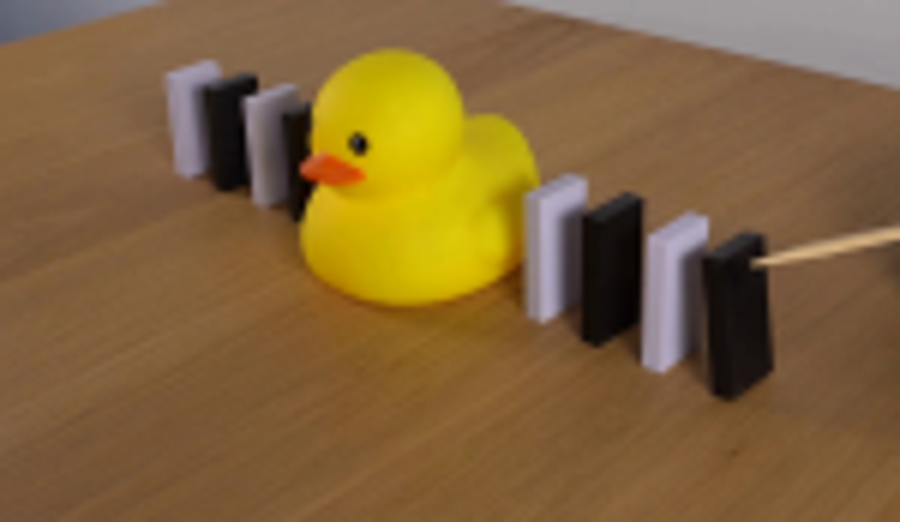
视觉工具实际返回图片 3
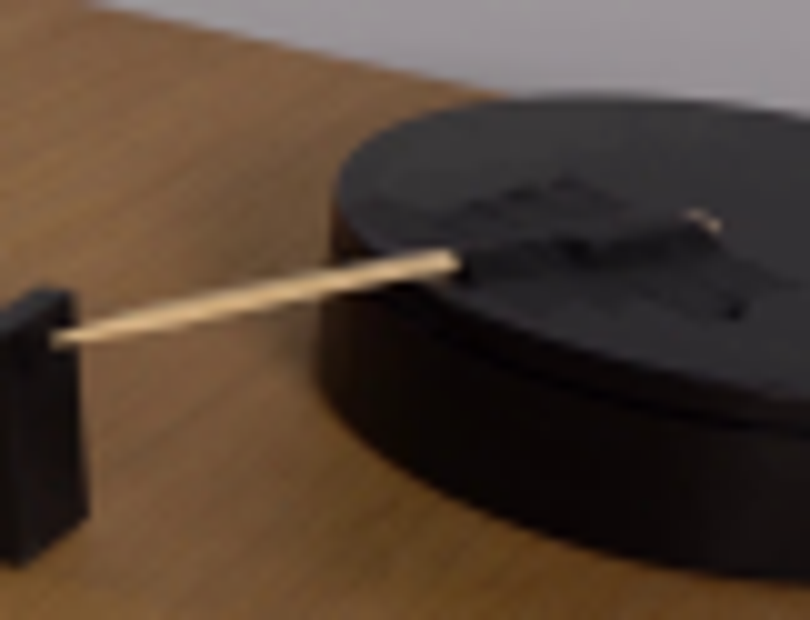
视觉工具实际返回图片 4
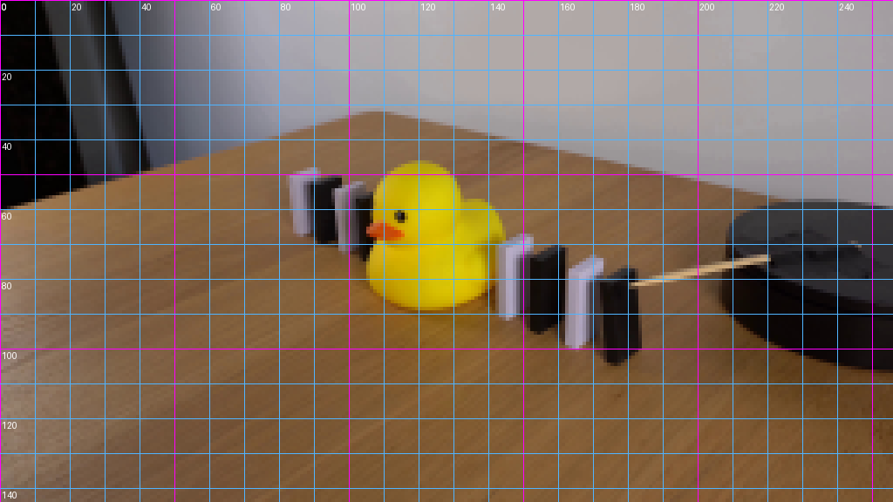
视觉工具实际返回图片 5
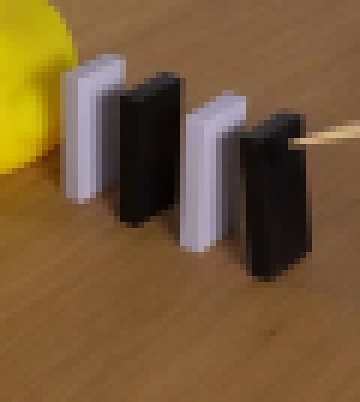
视觉工具实际返回图片 6
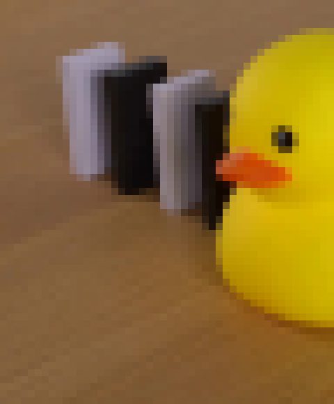
视觉工具实际返回图片 7
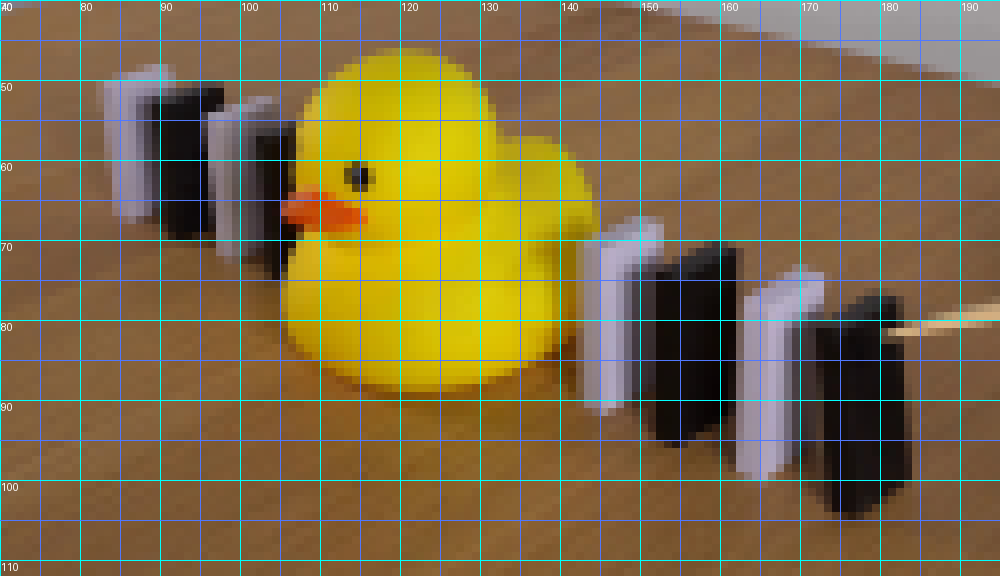
视觉工具实际返回图片 8
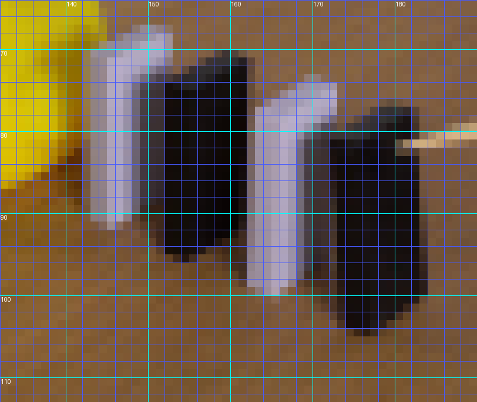
视觉工具实际返回图片 9
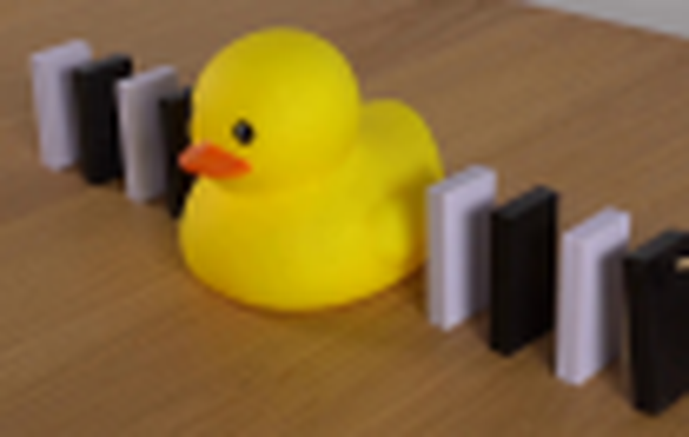
视觉工具实际返回图片 10
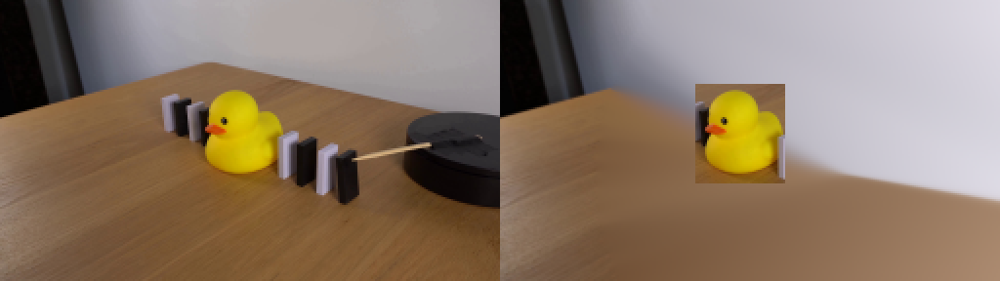
视觉工具实际返回图片 11
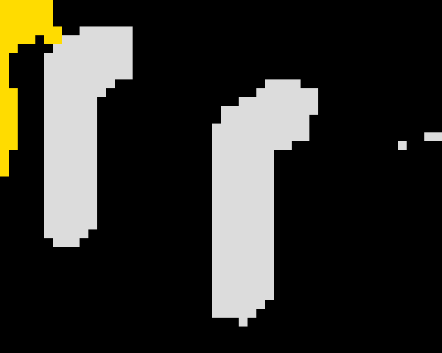
视觉工具实际返回图片 12
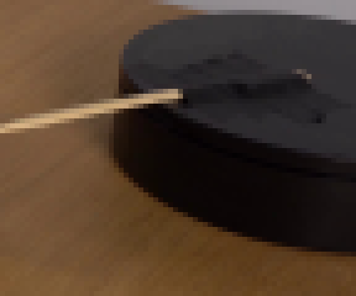
视觉工具实际返回图片 13
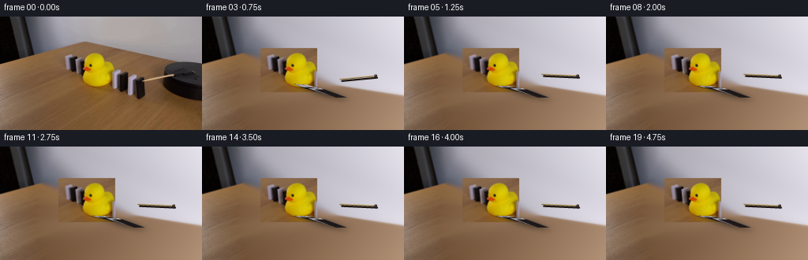
视觉工具实际返回图片 14
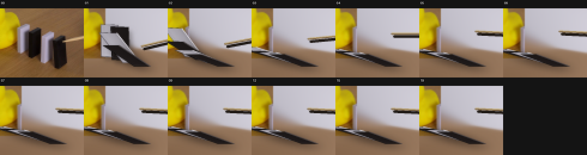
视觉工具实际返回图片 15

视觉工具实际返回图片 16
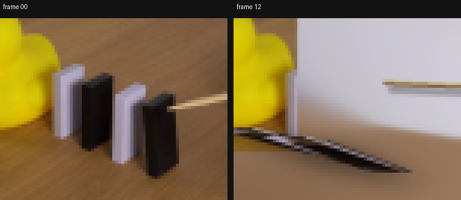
视觉工具实际返回图片 17
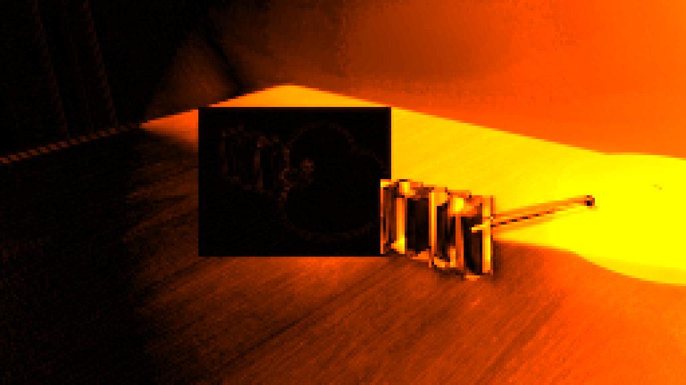
视觉工具实际返回图片 18
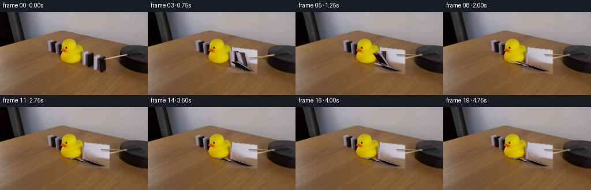
视觉工具实际返回图片 19
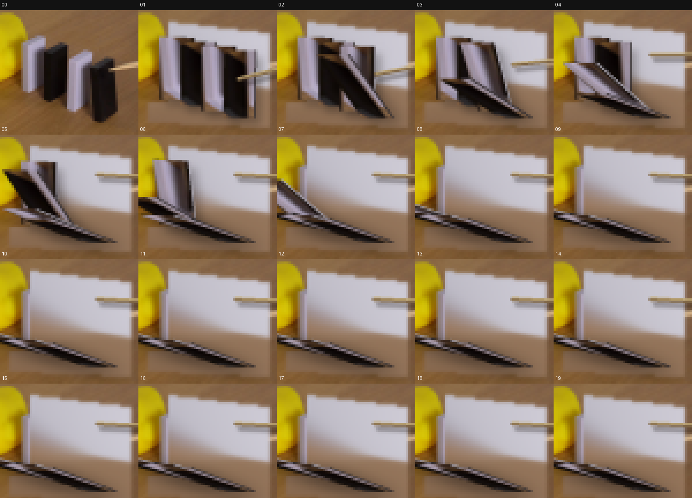
视觉工具实际返回图片 20
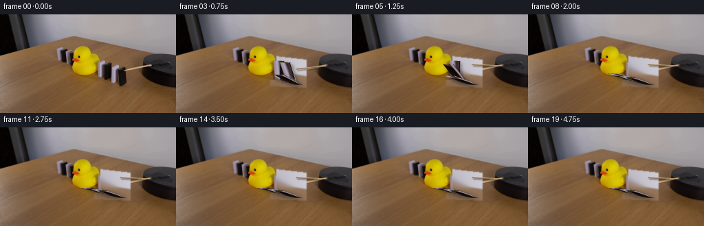
视觉工具实际返回图片 21
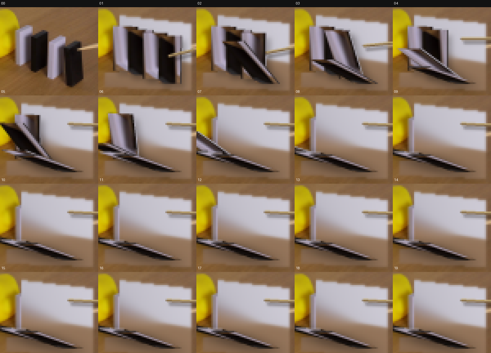
视觉工具实际返回图片 22

视觉工具实际返回图片 23
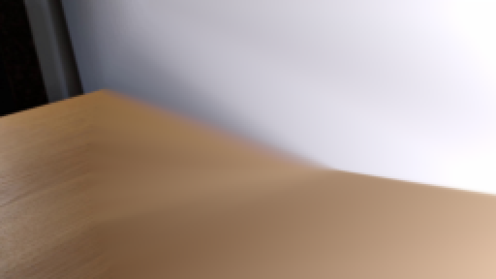
保存候选 5 份；完成命令 38 次；可验证图片返回 23 张。原始 API 响应与完整日志保留在本地。